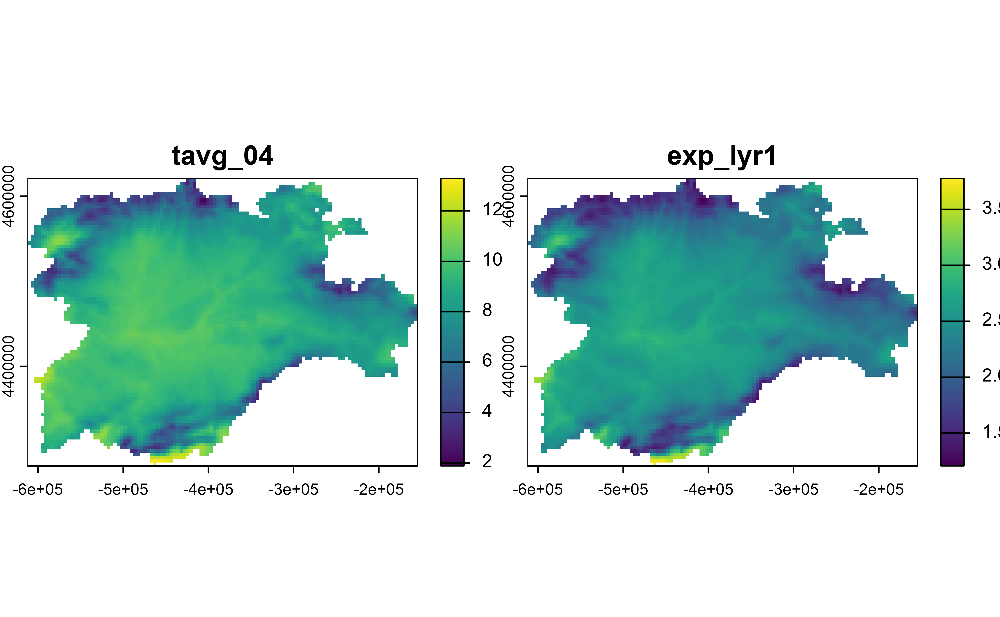

Create, modify, and delete cell values/layers/attributes of Spat* objects
Source: R/mutate-Spat.R
mutate.Spat.Rdmutate() adds new layers/attributes and preserves existing ones on a
Spat* object.
Arguments
- .data
A
SpatRastercreated withterra::rast()or aSpatVectorcreated withterra::vect().- ...
<
data-masking> Name-value pairs. The name gives the name of the column in the output.The value can be:
A vector of length 1, which will be recycled to the correct length.
A vector the same length as the current group (or the whole data frame if ungrouped).
NULL, to remove the column.A data frame or tibble, to create multiple columns in the output.
- .keep
Control which columns from
.dataare retained in the output. Grouping columns and columns created by...are always kept."all"retains all columns from.data. This is the default."used"retains only the columns used in...to create new columns. This is useful for checking your work, as it displays inputs and outputs side-by-side."unused"retains only the columns not used in...to create new columns. This is useful if you generate new columns, but no longer need the columns used to generate them."none"doesn't retain any extra columns from.data. Only the grouping variables and columns created by...are kept.
- .before, .after
<
tidy-select> Optionally, control where new columns should appear (the default is to add to the right hand side). Seerelocate()for more details.- .by
-
<
tidy-select> Optionally, a selection of columns to group by for just this operation, functioning as an alternative togroup_by(). For details and examples, see ?dplyr_by.
terra equivalent
Some terra methods for modifying cell values:
terra::ifel(), terra::classify(), terra::clamp(), terra::app(),
terra::lapp(), terra::tapp()
Methods
Implementation of the generic dplyr::mutate() method.
See also
dplyr::mutate() methods.
terra provides several ways to modify Spat* objects:
Other single table verbs:
arrange.SpatVector(),
filter.Spat,
rename.Spat,
select.Spat,
slice.Spat,
summarise.SpatVector()
Other dplyr verbs that operate on columns:
glimpse.Spat,
pull.Spat,
relocate.Spat,
rename.Spat,
select.Spat
Other dplyr methods:
arrange.SpatVector(),
bind_cols.SpatVector,
bind_rows.SpatVector,
count.SpatVector(),
distinct.SpatVector(),
filter-joins.SpatVector,
filter.Spat,
glimpse.Spat,
group-by.SpatVector,
mutate-joins.SpatVector,
pull.Spat,
relocate.Spat,
rename.Spat,
rowwise.SpatVector(),
select.Spat,
slice.Spat,
summarise.SpatVector()
Examples
library(terra)
# SpatRaster method
f <- system.file("extdata/cyl_temp.tif", package = "tidyterra")
spatrast <- rast(f)
mod <- spatrast |>
mutate(exp_lyr1 = exp(tavg_04 / 10)) |>
select(tavg_04, exp_lyr1)
mod
#> class : SpatRaster
#> size : 87, 118, 2 (nrow, ncol, nlyr)
#> resolution : 3881.255, 3881.255 (x, y)
#> extent : -612335.4, -154347.3, 4283018, 4620687 (xmin, xmax, ymin, ymax)
#> coord. ref. : World_Robinson
#> source(s) : memory
#> names : tavg_04, exp_lyr1
#> min values : 1.885463, 1.207493
#> max values : 13.283829, 3.774934
plot(mod)

# SpatVector method
f <- system.file("extdata/cyl.gpkg", package = "tidyterra")
v <- vect(f)
v |>
mutate(cpro2 = paste0(cpro, "-CyL")) |>
select(cpro, cpro2)
#> class : SpatVector
#> geometry : polygons
#> dimensions : 9, 2 (geometries, attributes)
#> extent : 2892687, 3341372, 2017622, 2361600 (xmin, xmax, ymin, ymax)
#> source : cyl.gpkg
#> coord. ref. : ETRS89-extended / LAEA Europe (EPSG:3035)
#> names : cpro cpro2
#> type : <chr> <chr>
#> values : 05 05-CyL
#> 09 09-CyL
#> 24 24-CyL